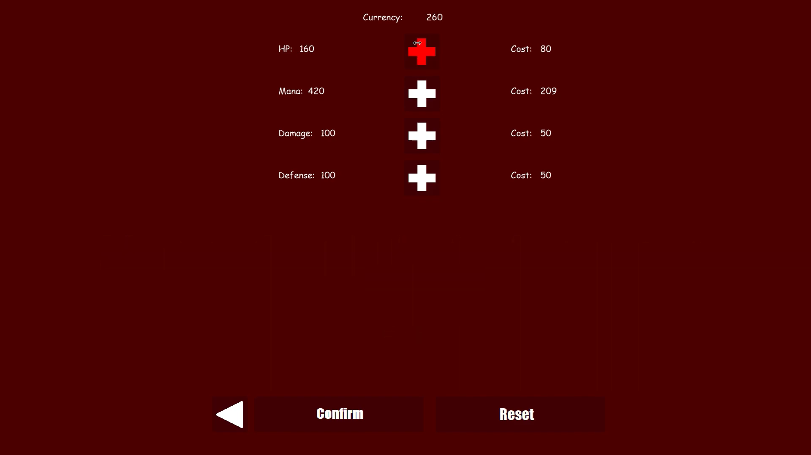

Toy Tale
Role: Programmer Engine: Own Engine using C++, DirectX 11
Time: April 2022 - May 2022 Group: 6 members
This game was done as a project for school as second years at Blekinge Institute of Technology. We had to create a game in our own engine using DirectX 11. This was done in order to teach us to build a game from the ground up. This was also the first time that we were required to be at school 4 hours per day, since this course was 50% pace. For this project we used the agile method scrum, with 2 week sprints and weekly checkups. This were to give an impression on how it is to work at a game company.
The game is a survival FPS game, where the player has to survive waves of incoming enemies. These enemies will get stronger with each wave. To help the player you will gain currency by defeating enemies and with this you can upgrade stats such as health and damage. The player has access to two different guns at their disposal and can fire a fireball at enemies.
MY CONTRIBUTIONS
Click on the boxes to get more info
Bullet/Weapon system
For this game, our vision was to have a system to have two different guns that would fire differently. We also wanted the Bullets to good to fire and we wanted the
system to be well optimsed. For the bullet system to be more optimsed, bullets were never created during run-time. Constantly creating new objects when firing a gun
can be quite the heavy task for the computer, however if they are already created and stored contigiously in memory, they can be accessed very fast. This is what our
bullet system does. Since the computers we programmed the game on were very computationally weak, every optimisation helped. In the end, no features were needed to be
cut or changed to fit the frames per second goal, since we often programmed with performance in mind.
The weapon system is partly based on a weapon system I created for an older project. In the old project the user was able to design new weapons by changing stats of the weapon such as fire rate, damage, bullet speed and so on, making it possible to create snipers and machine gun by specifying different stats. This project on the other hand, shared many similarities. There was however another feature added, which was the ability to decide how many bullets that were shot every time, or multishot as we called it. This was done by taking the forward vector of the player, and with the help of the right vector, space the creation of bullets out in a sonar triangle shape. In the end, we only created two weapons that did not feel too diferent, which in hindsight was poor choice since the system allowed for more diverse and interesting weapons.
Stats system
Since we wanted the game to be replayable and rewarding, we felt that adding a stats system and currency from defeating enemies would be fitting. For the currency
we simply added it to your total amount at the end of each round. This data was stored in a text file, which means that the progress would not reset if the user
closed the game and restarted. When the currency had been implemented the stats were next. The stats affected attributes such as player health, mana, defense and
bullet damage. These stats would be saved in the same file as the currency, and could be upgraded in the stats menu. This menu increased the effect of a stat and
decreased the currency amount, so that the user needs money to buy upgrades. The upgrades would then increase in price. The user could reset all stats if they
wanted to, including the curreny, and get a fresh restart of the game.
Upgrade screen in Toy Tale